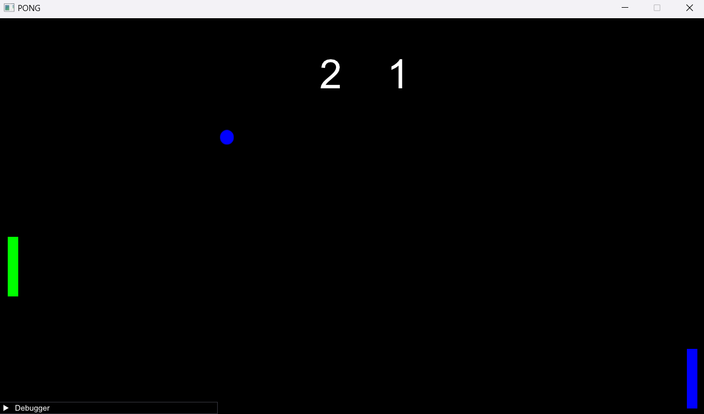
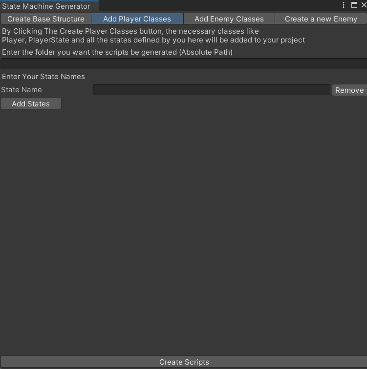
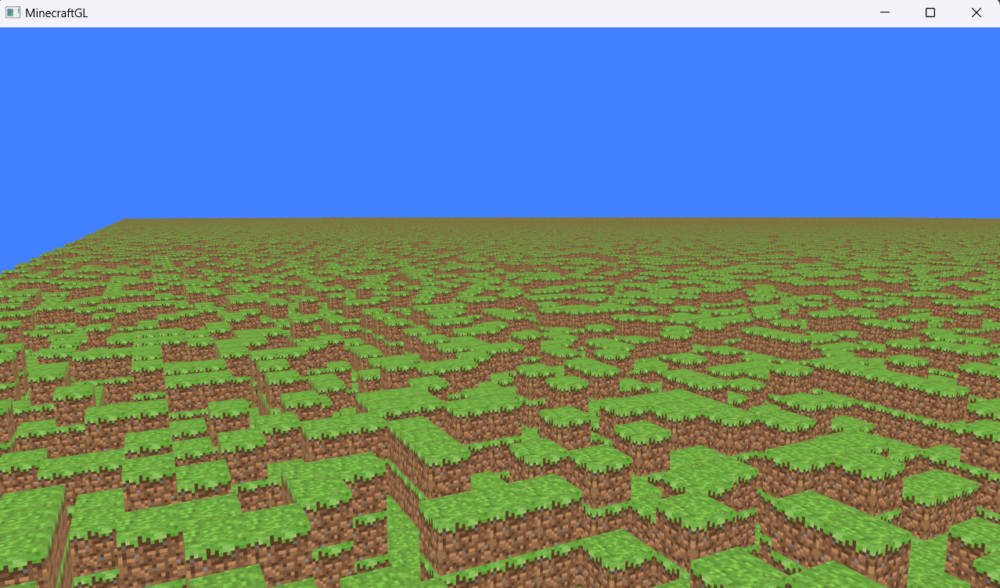

Hello! I’m Alireza Mohammadi, a passionate game developer with a love for creating engaging and memorable gaming experiences. I’m always seeking new challenges, and I enjoy pushing my skills by diving into graphics programming from time to time. Whether it’s crafting fun gameplay or exploring the technical intricacies of game design, I’m dedicated to bringing creative visions to life.
Alireza Mohammadi
Programming Language
Unity
90%
Git
90%
C#
80%
C++
70%
GLSL
50%
HLSL
30%
Careers
Explore through my education and work experience.
works
Icarus Studio
2022 -
Unity Developer
Since 2022, I've been working as a Unity developer at Icarus Studio, an indie game studio I co-founded with friends. Our main project is a 2D adventure game called The Mindwalker, currently in the demo stage. Along the way, we’ve also participated in several game jams, creating unique and experimental games under tight deadlines.
Alame Helli
2022 -
Unity AR Developer
As a freelancer, I’ve collaborated with Alame Helli, an Iranian school, to develop AR experiences for their students. I’ve worked on several projects, including Live Book and Helli Book Reader, designed to enhance learning through interactive technology
educations
isfahan university
2019 - 2024
I got my bachelor's degree in computer engineering from university of isfahan
projects
Explore through my projects.
The MindWalker
- GenreAction Adventure
- EngineUnity
- LanguageC#
- Level Count2
- Core DynamicHack and Slash
For the past year, I’ve been developing an action-adventure game called The Mindwalker. The game follows a protagonist with the unique ability to enter other people’s minds, uncover hidden information, and manipulate memories to serve his own motives.
The Mindwalker features two core gameplay elements. In one, you navigate the town as an ordinary man, gathering information about people to manipulate them. In the other, you delve into the minds of those individuals, where the game shifts into a hack-and-slash experience. Here, you must overcome the mind's defenses to uncover valuable secrets and information.
I can't provide the source for this game but here's a trailer of what we made in the past year
PongGL
- GenreRetro
- EngineNone
- LanguageC++
- APIOpenGl
I took a graphics programming class purely out of interest, and for the final project, I created a clone of the classic retro game Pong.
It was a great learning experience where I gained a solid understanding of the basics of graphics programming, worked with the OpenGL graphics API, and also learned some GLSL for shading.
State Machine Generator
- StateOngoing
- EngineUnity
- LanguageC#
- CategoryUnity Tool
In my main project, The Mindwalker, I use state machines to control entities. If you've worked with Unity's State Pattern before, you know how repetitive it can be to set up state machines and entities. To save time and avoid redundancy, I developed a Unity tool to automate these tasks.
While the core functionality is complete, I plan to expand it with additional features in the future
MinecraftGL
- StateOngoing
- GenreSurvival
- LanguageC++
- APIOpenGL
- Level Count1
- Core DynamicWorld Generation
I decided to further my exploration of graphics programming by creating a 3D game that features a clone of Minecraft's world generation.
Throughout this project, I learned valuable concepts in graphics programming, such as texture atlasing, instancing, anti-aliasing, and face culling.
Super Sweeper
- GenreHyper Casual
- EngineUnity
- LanguageC#
- Level Count1
I developed a game with my friends during a game jam that lasted just 2 days. The theme was 'how to make our city a better place,' and we created a character called Sweeper Man, who battles garbage to improve the environment. I'm proud to say that our game won first place!